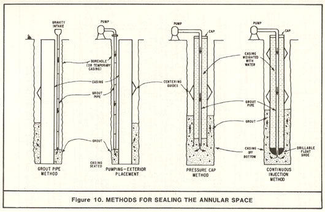
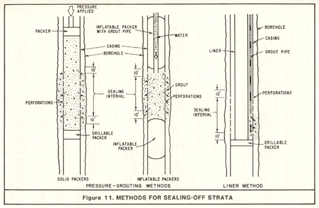

|
The annular space is the space between the well casing and wall of the drilled hole created during construction. This space must be adequately sealed to prevent the entrance of surface drainage or poor quality subsurface water, which may contaminate or pollute the well. This seal will also protect the casing against corrosion and possible structural failure. A number of acceptable sealing methods are presented in this appendix. Other methods may be suggested by individual well drillers on the basis of their experience and availability of equipment. An acceptable method should provide for the complete filling of the sealing interval with the appropriate sealing material to the specified depth. GeneralPrior to sealing, the annular space should be flushed to remove any loose formation material or drilling mud that might obstruct the operation. The use of centralizers – devices which are affixed to the casing at regular intervals to prevent it from touching the wall of the hole, thereby keeping the casing centered in the borehole – are recommended. This assures that the seal is not less than the desired minimum thickness. It is particularly significant for large diameter wells where the casing exceeds 10 inches in diameter. The use of the tremie or grout pipe for the introduction of the sealing material into the annular space is preferred. Where a tremie or grout pipe is used, the minimum annular space should be 2 inches and the minimum tremie size should be a nominal 1-1/2 inches in diameter. Gravity installation without a grout pipe or tremie should not be attempted when the sealing interval contains water or cannot be visually inspected (with the aid of a mirror or light). Where sealing material is to be introduced under water or the interval cannot be observed from the surface, methods involving “positive” placement (by a tremie or grout pipe, pumping or other application of pressure) must be used. The sealing material must always be introduced at the bottom of the interval to be sealed. This prevents “bridging” (jamming) or segregation (separation of large aggregate from the mixture in sand-cement or concrete grouts) of the sealing material and eliminates gaps. Sealing should be accomplished in one continuous operation. Where the sealing interval will exceed 100 feet in length, consideration must be given to the collapse strength of the casing. Further, because of the weight of such extensive seals, consideration must also be given to the installation of stronger retaining devices and to staging the placement of the seal (as, for example, the installation of a short segment of rapid- setting sealant in advance of the main body of sealing material; the former becomes a foundation to support the extensive seal). Sealing MethodsThe following methods can be used to seal the upper portion of the annular space. Except for the first, these methods are illustrated on Figure 10. The first method is frequently used where short seals, under 20 feet deep, are placed in dry material.  Gravity Installation (Without Tremie). In this method sealing material is poured into the annular space without the use of a tremie or grout pipe. It cannot be used where the annular space contains water and is limited to intervals less than 30 feet deep. When used, visual observation (with the aid of a mirror or light) should be made during placement of the seal. Grout Pipe Method. In this method, the seal is placed in the annular space by gravity through a grout pipe (or tremie) suspended in the annular space (see Figure 10).
Pumping-Exterior Placement. For this method the same procedure as described for the Grout Pipe Method (above) is followed except that the material is placed by pumping instead of by gravity flow. The grout pipe must always be full of sealing material and its bottom end must remain submerged in the sealing material until the interval has been filled. Pressure Cap Method. In the pressure cap method, the grouting is done with the hole drilled about 2 feet below the bottom of the conductor casing and the remainder of the well drilled after the grout is in place and set. The grout is placed through a grout pipe set inside the conductor casing.
Because there is the possibility that coarse aggregate will “jam” the grout pipe, concrete cannot be used as a sealant when this method is used. Continuous Injection. This method, called the Normal Displacement Method in the oil industry (which developed it), involves pumping grout through a tube or pipe centered in the casing via a “float shoe” fitted at the bottom of the casing. The gout is forced up into the annular space to the ground surface as is the case with the pressure cap method (above). The tube is detached and flushed. The float shoe, which has a back pressure valve, is drilled out. Because there is the possibility that coarse aggregate will “jam” the grout pipe, concrete cannot be used with this method. When the hole for a well is drilled, a strata may be found that produces water of undesirable quality. To prevent the movement of this water into other strata and to maintain the quality of the water to be produced by the well, such strata must be sealed-off. Also, where a highly porous non-water producing strata is encountered, it too must be sealed-off to prevent the loss of water or hydraulic pressure from the well. The following methods can be used in sealing-off strata or zones (see Figure 11). In addition, several of the methods described for sealing the upper annular space can also be used.  Pressure-Grouting Method. This method can be employed where a substantial annular space exists between the well casing and the wall of the drilled hole.
Frequently, an assembly consisting of inflatable (balloon) packers and grout pipe is used. The packers are placed to enclose the interval to be sealed, they are inflated and the grout pumped down the hose (which passes through the upper packer) into the interval to be sealed. Water is then pumped into the interval, squeezing the grout through the perforations. When the grout is sufficiently hardened, the packers are deflated and removed. Liner Method. Where the annular space between the casing and the wall of the drilled hole is minimal, the liner method can be employed.
|
| Appendix A Table of Contents Appendix C |